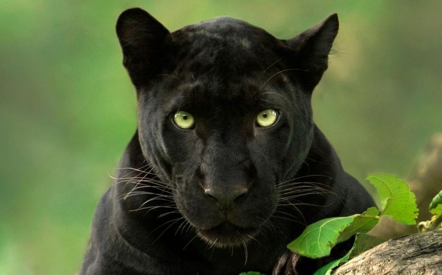

The Panther is a carnivorous mammal that primarily lives in Asia, Africa, and America. Panthers are nocturanal, hunting at night and they can run up to 70 mph! There is a species of panther that live in Florida.
Sadly, Florida panther populations are decresing from habitat loss. Panthers are currently listed as threatened in respect to conservation status.
 About Panther Conservation